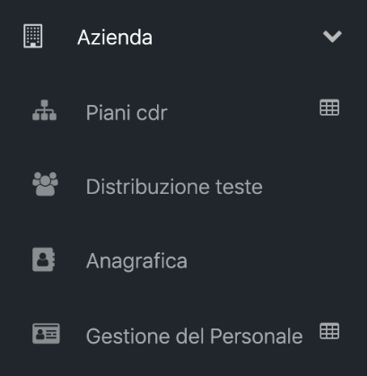
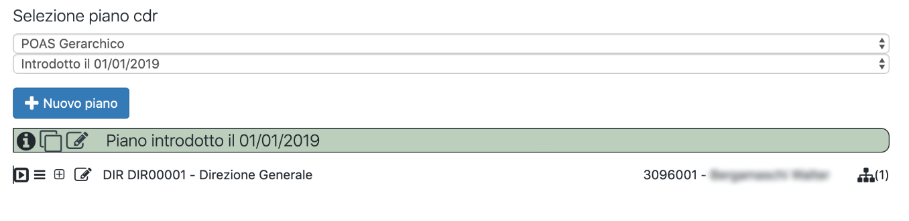
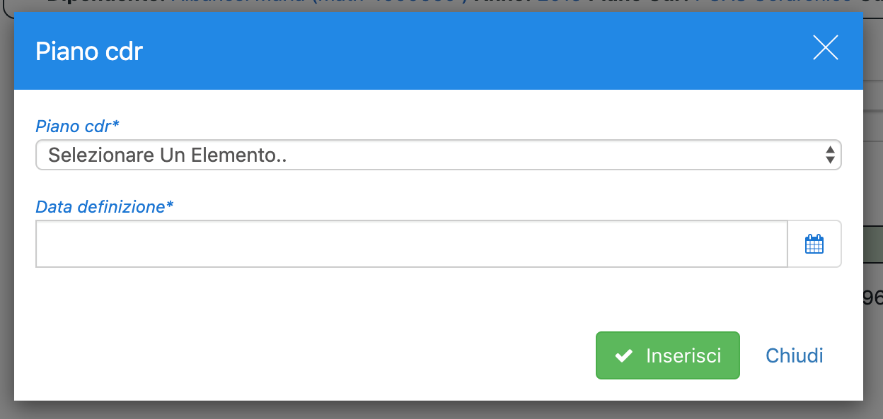
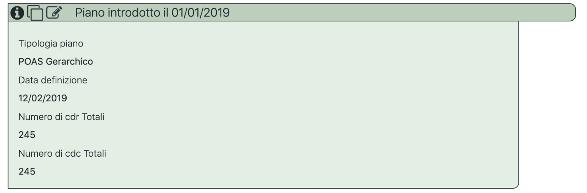
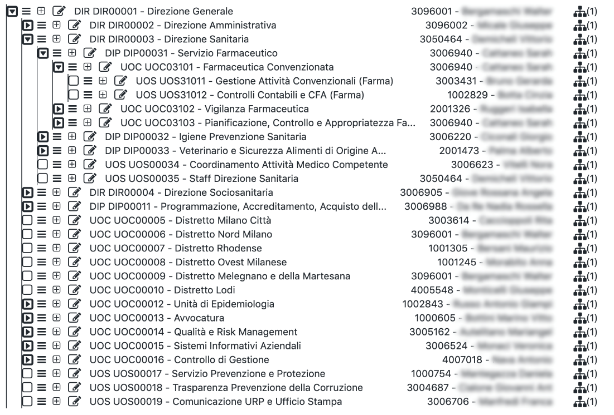
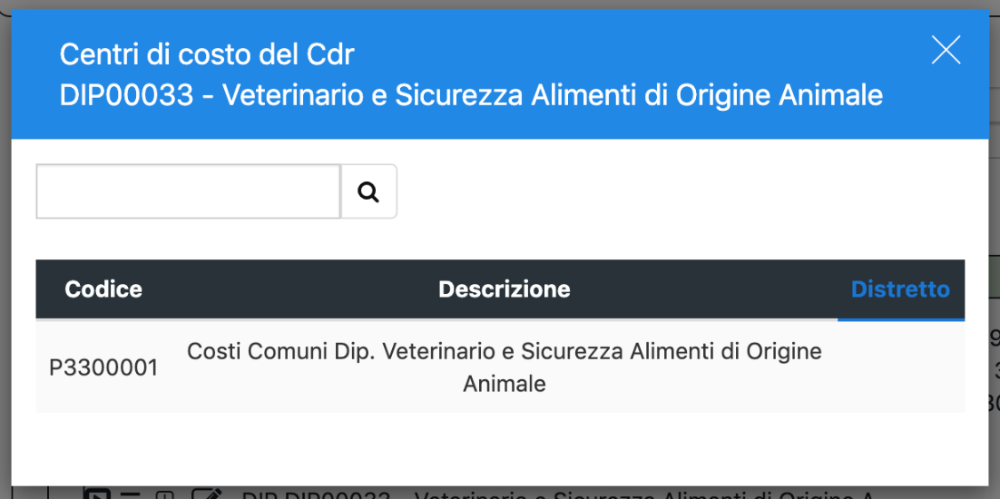
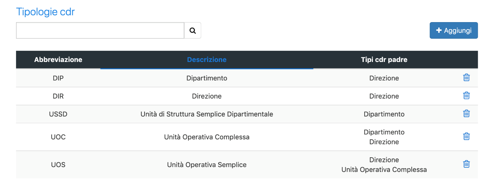
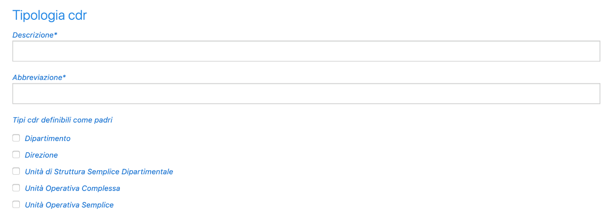

Azienda - Piani CDR
Cliccando sulla voce di menù “Azienda” è possibile visualizzare la voce “Piani CDR”, tramite la quale vengono gestiti i Centri di Responsabilità e definite le gerarchie aziendali.

Definizione della Gerarchia Aziendale
Cliccando sul pulsante “Piani CDR” viene definita la gerarchia aziendale.
In alto è possibile filtrare:
- quale tipologia di Piano Esistente visualizzare, selezionando il POAS (Piano Organizzativo Aziendale Strategico)
- e la data di introduzione.

Cliccando sul pulsante “Nuovo piano” verrà aperta una scheda in cui è possibile inserire un nuovo piano CDR, selezionando il POAS di riferimento e la data di definizione. Cliccare quindi su “Inserisci” per salvare il nuovo piano CDR, oppure su “Chiudi” per annullare l’operazione e tornare alla pagina principale.

Nella pagina principale, successivamente al pulsante di aggiunta di un nuovo piano, viene visualizzato il piano CDR selezionato, all’interno di una riga verde. Questo presenta 3 pulsanti di gestione:
- Informazioni sul piano CDR selezionato, dove si può visualizzare la tipologia di piano, la data di definizione, il numero di CDR totali e il numero di CDC (Centri di Costo) totali.
- Clona il piano selezionato, attraverso il quale è possibile duplicare il piano selezionato mettendo una nuova data di definizione.
- Modifica il piano selezionato, attraverso il quale è possibile introdurre il POAS (e, quindi, modificare il suo stato da introdotto a definito).

Successivamente viene riportata la gerarchia del piano CDR selezionato con presenti:
- Anagrafica, con l’abbreviazione del CDR, il codice CDR, e la descrizione.
- Responsabile CDR, con il numero di matricola e il cognome e nome (nel caso di un CDR senza un Responsabile definito all’interno della relativa anagrafica, il CDR erediterà il Responsabile dal CDR di livello superiore).

Inoltre, per ogni riga sono presenti 5 pulsanti:
- Visualizza figli, grazie al quale è possibile espandere la tabella e visualizzare i CDR sottostanti.
- Sposta, attraverso il quale è possibile spostare il CDR all’interno della gerarchia.
- Nuovo figlio, che aprirà una finestra attraverso cui è possibile inserire un nuovo figlio al CDR, selezionando l’anagrafica e visualizzando il responsabile di riferimento.
- Modifica CDR, dove è possibile modificare il CDR presente all’interno della gerarchia e visualizzare il responsabile di riferimento.
- CDC associati, cliccando il quale viene aperto una finestra di gestione dei CDC associati.

All’interno della tabella vengono visualizzati i Centri di Costo associati a quel determinato Centro di Responsabilità, riportando:
- Codice del CDC
- Descrizione del CDC
- Distretto di riferimento.
Cliccando sulla riga è quindi possibile modificare il CDR a cui viene associato, selezionandolo tra le voci del menù a tendina.
Definizione Tipologie di CdR
Cliccando sull’icona presente all’interno del pulsante si aprirà la pagina per la definizione di nuove tipologie di CDR e di gestione per quelle già presenti.
All’interno della tabella viene riportato l’elenco delle tipologie esistenti con le informazioni inerenti:
- abbreviazione del tipo di CDR
- descrizione del tipo di CDR
- tipo di CDR padre.
A fianco è possibile eliminare la tipologia di CDR tramite l’apposito pulsante.
Cliccando sulle singole righe è possibile aprire la pagina di modifica, dove tramite gli appositi pulsanti è possibile aggiornare e salvare la modifica, eliminare la tipologia di CDR, oppure cliccare indietro per annullare la modifica.

Tramite il pulsante aggiungi nella pagina principale è possibile aggiungere una nuova tipologia di CDR inserendo:
- la descrizione della tipologia
- l’abbreviazione del tipo di CDR
- il tipo di CDR definito come padre a livello di gerarchia.

Una volta compilato tutti i campi è necessario cliccare su “Inserisci”, oppure su “Indietro” per annullare l’operazione e tornare alla pagina iniziale.